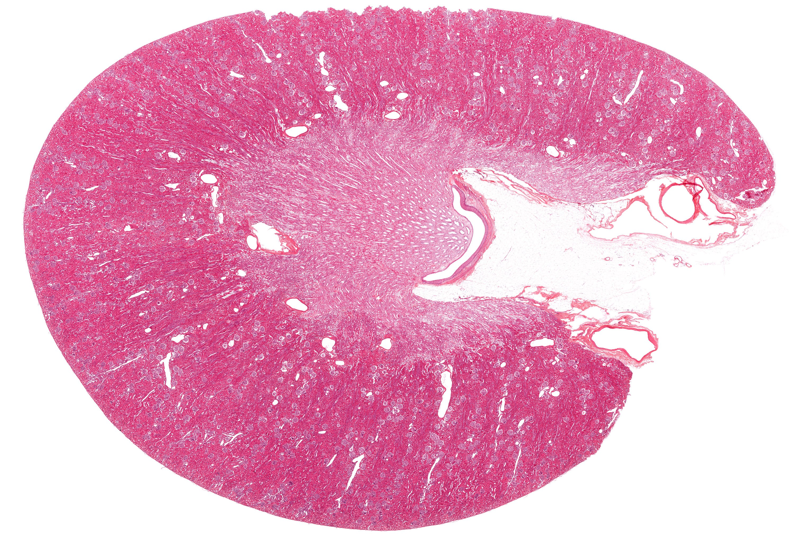
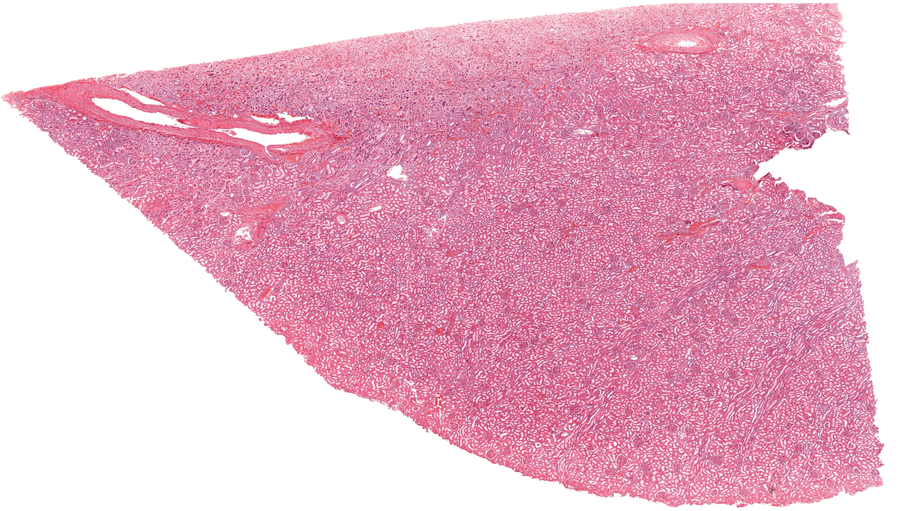
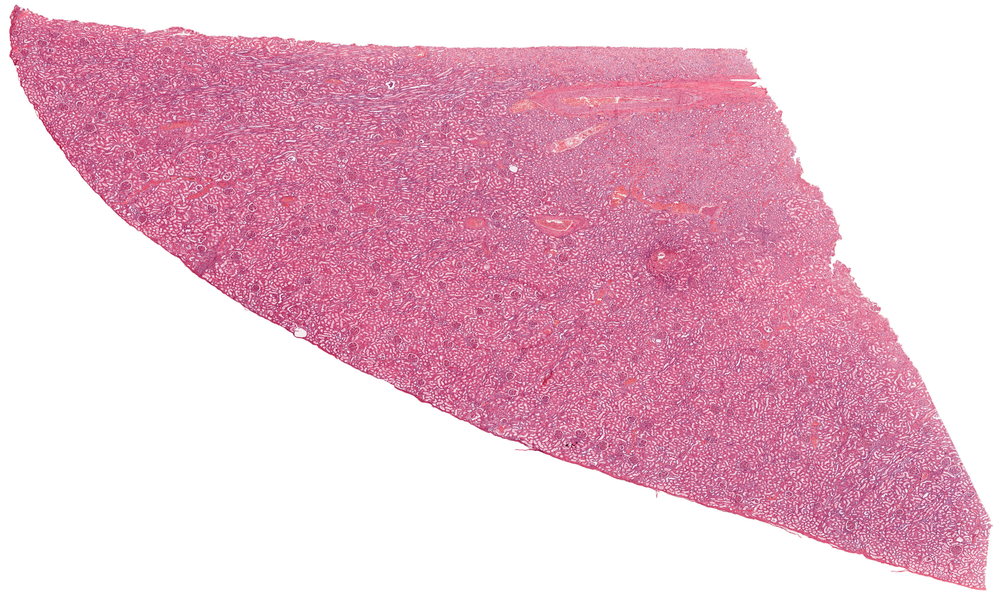
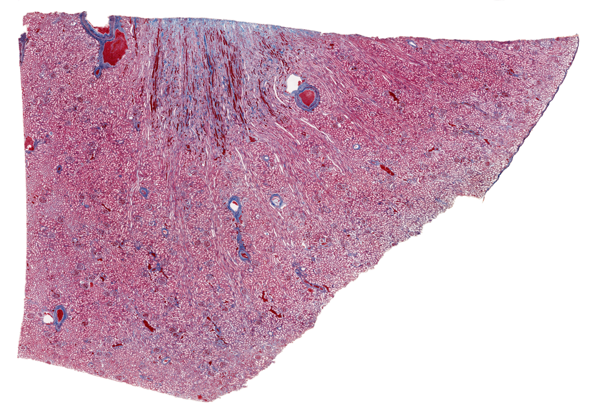
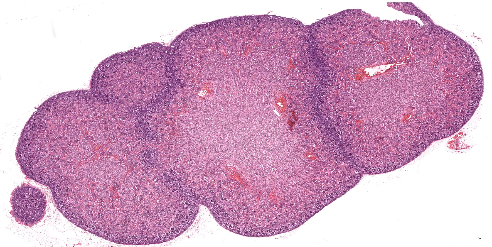
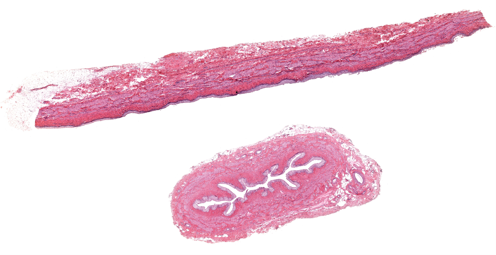
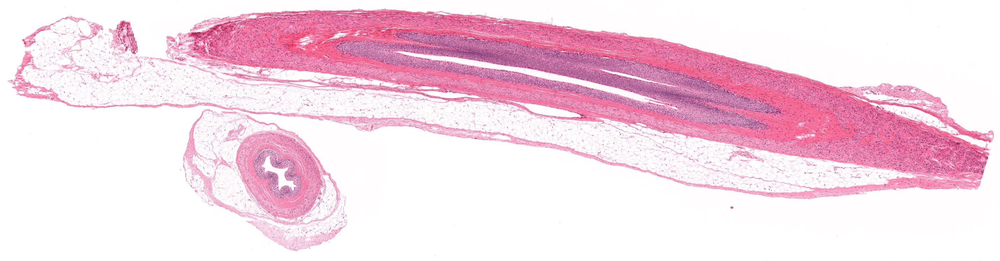
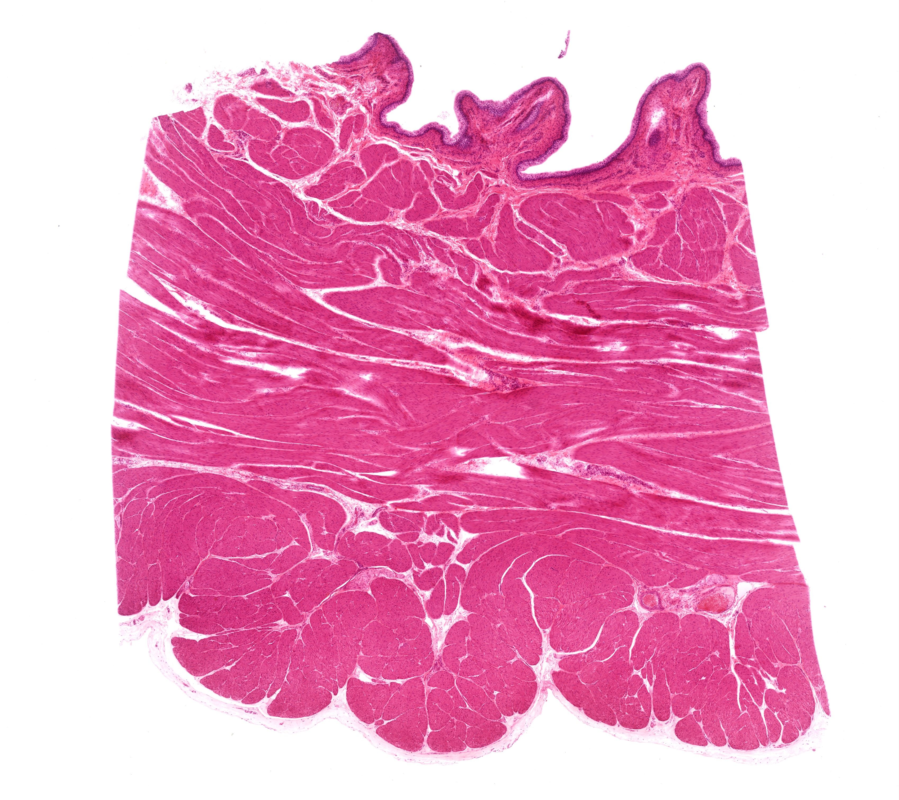
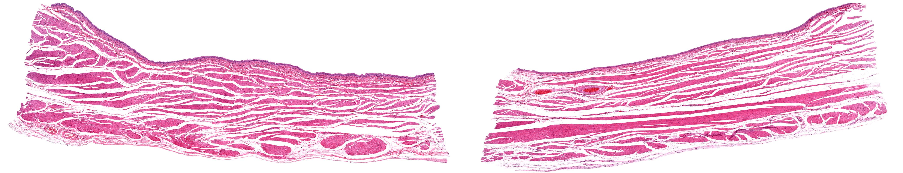
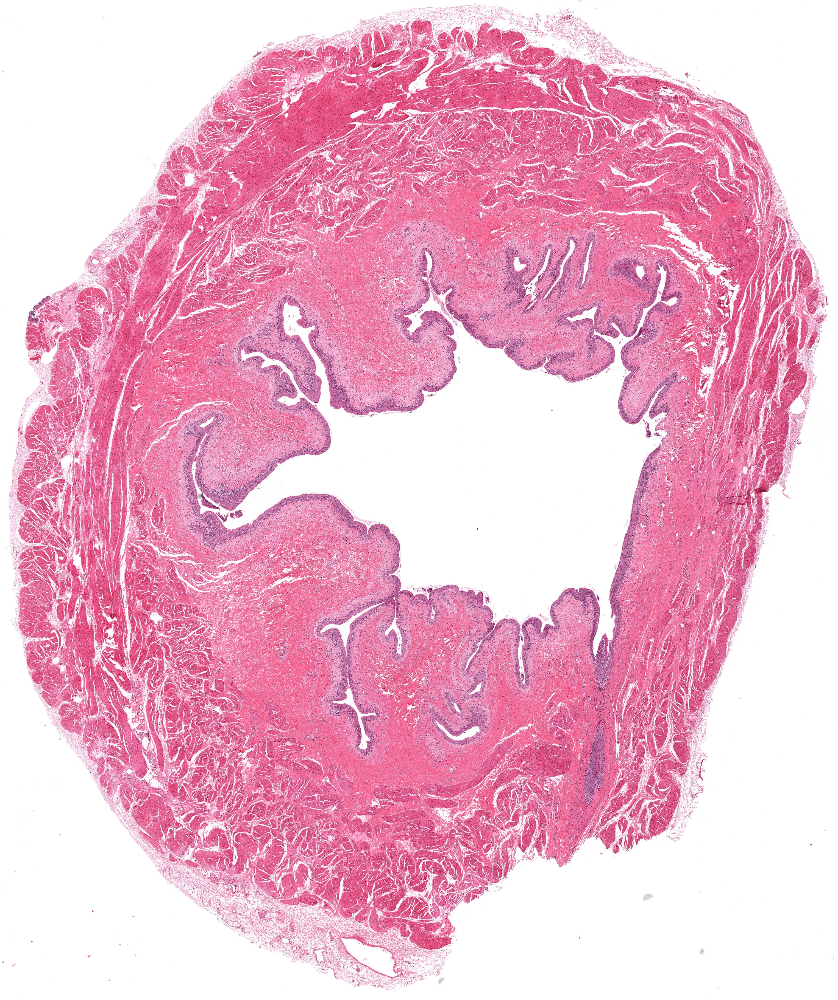

Chapter 16 · 器官系统
泌尿系统
Urinary System · 4 小节 · 10 张切片 · 19 张电镜 · 本地概览 10 张
本章导语
泌尿系统以肾为核心，肾又按皮质与髓质分区，以便于观察的肾小体与肾小管为功能单元。本章学习路径由被膜向内逐层定位：先认清肾小体、近端与远端小管，再沿集合管追到乳头管；随后比较输尿管与膀胱的管壁层次，重点掌握变移上皮随器官充盈状态发生的形态改变。
复习重点
- 肾单位由肾小体和肾小管构成，是尿液形成的结构基础
- 近端小管上皮胞质嗜酸性强，游离面刷状缘明显
- 远端小管上皮较低，管腔大而清亮，细胞分界清楚
- 球旁复合体位于入球微动脉与远曲小管相邻处
- 输尿管与膀胱黏膜均衬以变移上皮，无黏膜肌层
- 膀胱肌层由粗大平滑肌束交织构成，即逼尿肌
易混淆对比
- 变移上皮（收缩态） vs 变移上皮（扩张态）：细胞层数与表层细胞形状：收缩时层数多、表层细胞呈圆形；扩张时层数少、表层细胞扁平
- 近端小管 vs 远端小管：胞质染色深浅、刷状缘有无与管腔大小：近端深染且腔小，远端浅染且腔大清亮
- 输尿管 vs 输精管：上皮类型与肌层厚度：输尿管为变移上皮且皱襞明显，输精管为假复层柱状上皮且肌层厚
待核验译名：Fetal Kidney 一节中指代被膜下生肾细胞的区域名，中文多用生肾区，教材另有肾发生带一称
阅读提示：本页中文要点为自编复习笔记，不是原站正文的翻译；标本图像为经作者书面许可保存的中分辨率概览，每张卡片保留 © 署名与原页面链接，“原站本章/原站切片”可查看高倍与结构标注。本站为 Histology Guide 的非官方中文学习改编版，未经其认可或背书。
肾（皮质与髓质）
Kidney
- 肾表面为致密结缔组织被膜，实质分皮质与髓质，皮质内含肾小体。
- 肾小体由血管球与肾小囊构成，血管球为盘曲的有孔毛细血管。
- 近端小管曲部上皮呈立方形，胞质嗜酸性强，游离面有刷状缘。
- 远端小管曲部上皮较低，管腔较大，细胞分界较清晰，染色较浅。
- 髓放线内可见直小管与集合管，是皮质向髓质过渡的区域。
低倍镜低倍镜先区分皮质与髓质，再寻找皮质内成簇的圆形肾小体。
高倍镜高倍镜辨认肾小囊腔、血管球袢及近端小管的刷状缘。
易混提示：近端与远端小管断面相似，关键看胞质染色深浅、刷状缘有无与管腔清亮度。
相关标本 · 4

点击图片放大 · 本地概览
MH 143 Kidney
肾（皮质与髓质，H&E）
H&E
本地概览
3000×2028
图像 © Histology Guide 及/或原始贡献者 · 非商业教育用途，经许可保存；原页面链接见下方

点击图片放大 · 本地概览
MH 141a Kidney
肾小体（H&E）
Nephron
H&E
本地概览
4243×2409
图像 © Histology Guide 及/或原始贡献者 · 非商业教育用途，经许可保存；原页面链接见下方

点击图片放大 · 本地概览
MH 141b Kidney
肾小管（H&E）
Nephron
H&E
本地概览
4547×2729
图像 © Histology Guide 及/或原始贡献者 · 非商业教育用途，经许可保存；原页面链接见下方

点击图片放大 · 本地概览
MH 142 Kidney
肾（Azan 三色染色）
Nephron
Azan
本地概览
4304×2963
图像 © Histology Guide 及/或原始贡献者 · 非商业教育用途，经许可保存；原页面链接见下方
胎儿肾
Fetal Kidney
- 胎儿肾被膜下为生肾区，可见不同发育阶段的肾小体聚集。
- 浅层肾小体体积小、结构不成熟，深层者发育较完善并已具功能。
- 胎儿肾小叶间结缔组织较多，皮质与髓质的分界不如成人清晰。
- 生肾区随发育逐渐向内推移，出生后浅层肾单位继续成熟。
低倍镜低倍镜观察被膜下细胞密集带，据此确定生肾区的位置。
高倍镜高倍镜比较不同深度肾小体的体积与肾小囊发育程度。
易混提示：胎儿肾小体排列紧密、间质细胞多，切勿误认为炎症细胞浸润。
相关标本 · 1

点击图片放大 · 本地概览
MH 140 Kidney Fetal
胎儿肾（生肾区）
H&E
本地概览
3152×1583
图像 © Histology Guide 及/或原始贡献者 · 非商业教育用途，经许可保存；原页面链接见下方
输尿管
Ureter
- 输尿管壁由黏膜、肌层和外膜构成，黏膜形成纵行皱襞。
- 上皮为变移上皮，收缩状态下细胞层数增多，表层细胞呈伞状。
- 固有层为致密结缔组织，无腺体，其深部也没有黏膜肌层。
- 肌层上段为内纵、外环两层平滑肌，下段增补外纵层。
低倍镜低倍镜观察星形管腔皱襞与黏膜、肌层、外膜三层结构。
高倍镜高倍镜确认上皮为变移上皮，表层细胞核圆、胞质丰富。
易混提示：输尿管收缩时皱襞十分明显，勿与输卵管黏膜的复杂皱襞混淆。
相关标本 · 2

点击图片放大 · 本地概览
MH 146 Ureter
输尿管（H&E）
H&E
本地概览
4920×2536
图像 © Histology Guide 及/或原始贡献者 · 非商业教育用途，经许可保存；原页面链接见下方

点击图片放大 · 本地概览
MHS 215 Ureter
输尿管（横切面，H&E）
H&E
本地概览
2861×747
图像 © Histology Guide 及/或原始贡献者 · 非商业教育用途，经许可保存；原页面链接见下方
膀胱
Urinary Bladder
- 膀胱壁由黏膜、肌层和外膜构成，空虚时黏膜形成大量皱襞。
- 上皮为变移上皮，细胞层数随膀胱充盈状态发生改变。
- 固有层富含弹性纤维与血管，其深部没有黏膜肌层。
- 肌层由粗大的平滑肌束交织构成，即逼尿肌。
- 充盈状态切片中上皮变薄、表层细胞扁平，可据此判断功能状态。
低倍镜低倍镜比较皱襞多少与上皮厚度，判断切片取自空虚或充盈膀胱。
高倍镜高倍镜观察变移上皮表层细胞是圆形还是扁平。
易混提示：膀胱没有黏膜肌层和黏膜下层，固有层直接与肌层相接。
相关标本 · 3

点击图片放大 · 本地概览
MH 147 Bladder
膀胱（收缩状态）
H&E
本地概览
3395×3024
图像 © Histology Guide 及/或原始贡献者 · 非商业教育用途，经许可保存；原页面链接见下方

点击图片放大 · 本地概览
MH 018 Transitional Epithelia
变移上皮（舒张与收缩膀胱）
Relaxed and Stretched Bladder
H&E
本地概览
4215×810
图像 © Histology Guide 及/或原始贡献者 · 非商业教育用途，经许可保存；原页面链接见下方

点击图片放大 · 本地概览
MHS 214 Bladder
膀胱（充盈状态）
H&E
本地概览
3653×4354
图像 © Histology Guide 及/或原始贡献者 · 非商业教育用途，经许可保存；原页面链接见下方
本章电镜照片
19 张 · 需在线查看
电镜照片 19 张（在线查看）
自测
8 题 · 自编
先自己回答，再点“显示答案”。标记为易错的项目会进入复习模式。
肾单位的组成是什么？
概念
由肾小体和肾小管两部分构成，肾小体包括血管球与肾小囊。
如何在切片上区分近端小管与远端小管？
对比
近端小管胞质嗜酸性强、刷状缘明显、管腔小而不规则；远端小管染色浅、管腔大而清亮。
肾小体位于肾的哪个部位？
识别
位于肾皮质，成簇分布；髓质内一般没有肾小体。
变移上皮的形态为什么随器官状态改变？
概念
表层细胞可伸展变扁，器官充盈时细胞层数减少、上皮变薄，排空后恢复。
输尿管与膀胱的管壁层次有何共同点？
对比
两者均由黏膜、肌层和外膜构成，黏膜上皮均为变移上皮，且都没有黏膜肌层。
胎儿肾切片中被膜下的细胞密集带叫什么？
识别
生肾区，其中可见处于不同发育阶段的肾小体。
膀胱壁最厚的一层是什么？其特点如何？
概念
肌层，由粗大的平滑肌束交织排列构成，称为逼尿肌。
为什么不能把肾髓质内的管状结构都认作肾小管？
对比
髓质内还含直小血管与集合管，集合管管径粗、上皮分界清楚，需按位置与细胞形态区分。